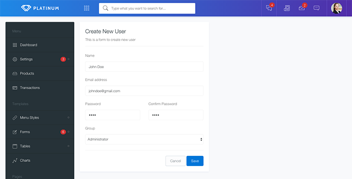
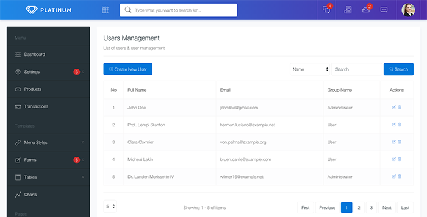
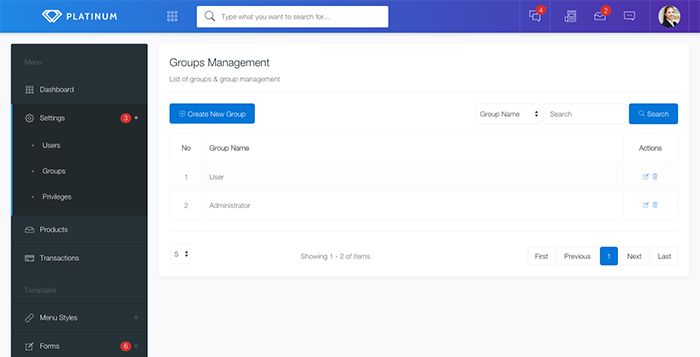
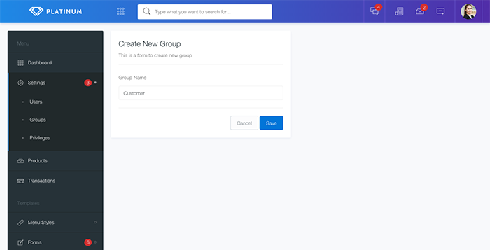
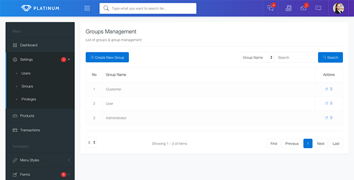
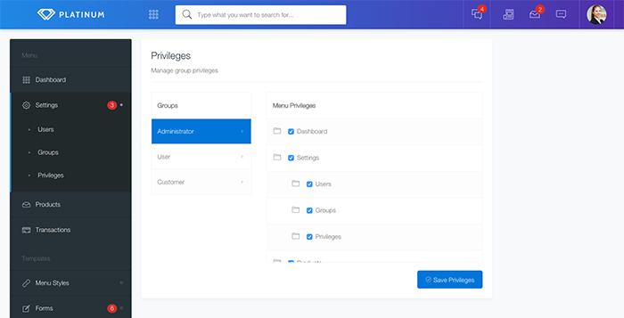

Platinum Documentation
Laravel & Vuejs SPA Admin Starter
Thank you for purchasing our premium Platinum item. We will walk you through the installation and setup of this project. Hold tight, it will be quick and easy.
Before starting the installation, there are some things that you must to prepare. You will need to make sure your server meets the following requirements:
If you have not set up your server, you can download XAMPP on following link. Please download the latest version and install on your computer.
To perform the installation, extract the downloaded zip file then copy the "platinum" folder to the root directory of your web server. These directories are usually named htdocs, www, public_html or others. Then import the "platinum.sql" database file to your local server.
The next step is to configure the database on your project. Open the ".env" file in your project directory. Then adjust the following line with the configuration on your server.
DB_DATABASE=platinum // Your database name DB_USERNAME=root // Your mysql username DB_PASSWORD= // Your mysql user password
Cheers! Now you can access your project via browser. The following are the user account that have registered in the database that you can use to login.
Email : johndoe@native-theme.com
Password : 123456
We can create many users with different menu permissions. The following is a guide to create a new user.
Click Add New User to show user form.
Fill the form and select Group for this new user. Then click save to save user data.
New user has been successfully created. The menu permissions of this user will depend on the selected group.
Because the menu in this project is dynamic and can be configured according to certain permissions, we need to make changes to the database to make changes to the menu. This section is a guide to adding new menus to this project.
First we have to access the table menus on the database. The table has several columns, this is an explanation of each of these columns.
idThis column is the primary key and auto increment, so we do not need to fill this field to add new menu.
parent_idEvery menu can have parent as much as 1 level, we can fill this column with parent menu id if menu we will add have parent menu or fill with 0 if not have parent menu.
child_countNumber of child of every menu.
titleThe name of the menu that will appear in the menu list.
route_nameRoute name used by vue router, adjust to the desired route.
paramsSpecific parameters that we need to sent to targeted menu. Use JSON format to fill this field.
querySpecific queries that we need to sent to targeted menu. Use JSON format to fill this field.
iconThe icon will appear on the menu title side.
Group is used to group menu permissions from each user. You can create multiple groups to assign different menu access rights to each user. Here are the steps to create a new group.
Click Add New Group to show group form.
Fill the group name. Then click save to save group data.
New group has been successfully created. Now we can setting a menu permissions for this group.
In this section you can set the permissions of each existing group. To set the menu that appears or does not appear in a particular group, click on one of the groups on the left. Then check the menu that can be accessed on the menu option on the right.
In some parts of this project we use premium plugins, therefore we also attach documentation and complete examples of the usage of the plugin.
Exort uploader is a very easy to use plugin, this plugin has a filepicker that makes it easier for us to choose the file that has been uploaded. It has complete documentation and sample code.
You'll find a list of all Platinum releases with a log of features added and bug fixes next to each one.
Version 1.0 (March 20th, 2018) - Initial Release